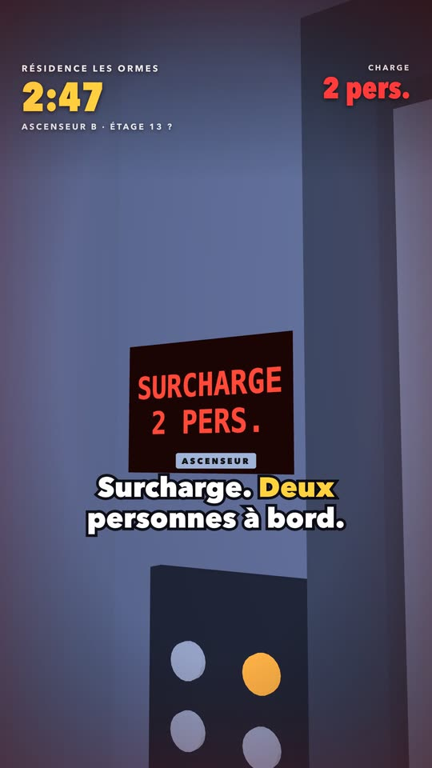
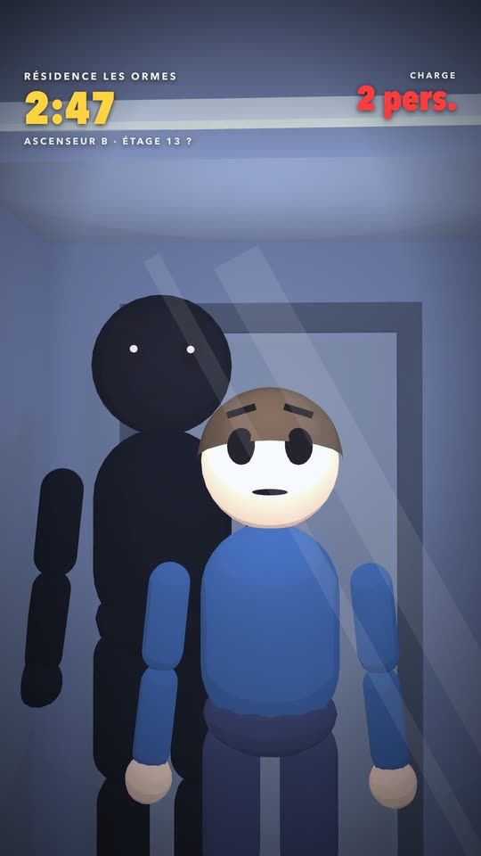
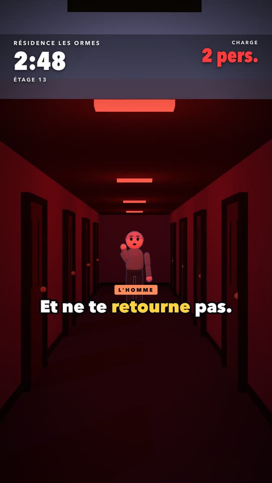
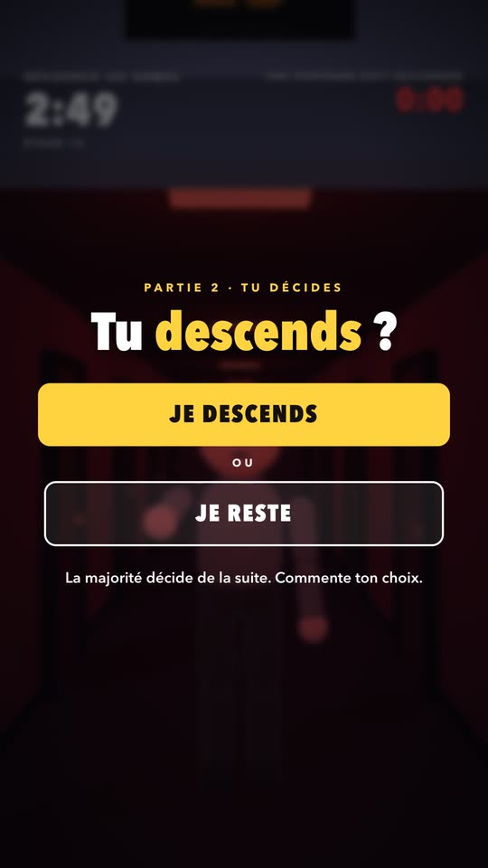

Un skill pour Claude
Ton studio de vidéos POV tient dans un fichier.
Importe le fichier dans Claude et décris une idée. Il écrit l'histoire, construit la scène en 3D, la filme, pose les voix et le son. Tu récupères une vidéo verticale prête à poster.
- 2 à 3 minde rendu par minute de vidéo, sur un Mac récent
- 1080 × 1920format Reels, TikTok, Shorts
- 0 €par rendu, autant de versions que tu veux
« L'étage 13 », 65 secondes. Faite avec POV Studio, sans retouche.
Tu parles, il produit
Pas de logiciel à apprendre. Une conversation.
POV Studio contient la méthode que Claude lit tout seul. Tu n'écris ni code ni commande.
Toi
Fais-moi une vidéo POV d'horreur, 60 secondes, dans un ascenseur la nuit. Fin avec un choix pour le public.
Claude
- Script et minutage des répliques
- Scène 3D : décor, personnages, caméra à la première personne
- Planche d'images à valider avant le rendu
- Voix, bruitages et mixage
- Vidéo finale et légende prête à coller
Ensuite, tu ajustes en parlant
Chaque version se refait en quelques minutes, parce que la scène est du code et pas une image figée.
- « Plus stressant vers la fin »
- « Raccourcis à 45 secondes »
- « Propose trois autres voix pour l'homme »
- « Change le dilemme »
- « La même en anglais »
- « 68 % ont choisi de sortir : fais la partie 2 »
Comment ça marche
Trois gestes, une seule fois
Importe le fichier
Tu reçois
pov-studio.skill. Dans Claude : Paramètres, Capacités, Skills, Importer.Écris « Installe POV Studio »
Claude installe tout lui-même en quelques minutes, puis te montre la démo pour prouver que ça marche.
Décris ta vidéo
Une idée, un lieu, une époque. Ou demande-lui trois propositions et choisis.
Images tirées de la vidéo de démonstration
Le spectateur est dedans, et c'est lui qui décide
Vue à la première personne, interface de jeu, horloge, compteur, fin ouverte. Ce sont les ressorts qui font commenter.




Ce que tu reçois
Le moteur, la méthode et les exemples
- 1moteur 3D
Décors, personnages, caméra. Pièces, portes, mobilier, rues, personnages articulés qui parlent, vue à la première personne avec les mains et le téléphone.
- 1interface de jeu
Tout ce qui s'affiche par-dessus. Horloge, jauge, compte à rebours, sous-titres avec mot surligné, notifications, écran de choix final.
- 36bruitages
Fabriqués par le moteur, libres de droits. Cœur, pas, portes, alarme, montée de tension, et un mixage automatique au niveau des plateformes.
- 16ressorts de mystère
Un catalogue pour ne pas copier les autres. Le compte faux, le reflet, la boucle, le témoin tranquille… avec un exemple pour chacun.
- 3styles d'image
Cartoon, nuit bleue, pixel. Pour la fiction interactive comme pour l'histoire vraie, avec la structure seconde par seconde et une banque d'accroches.
- 4exemples complets
À copier et transformer. Une démo, « L'étage 13 », « Louis XVI » et « Le Sixième Sceau », avec leurs voix.
- 3façons d'avoir des voix
Les voix gratuites de ton Mac, ElevenLabs avec indications de jeu, ou tes propres enregistrements.
- 1mode d'emploi
Écrit pour quelqu'un qui ne code pas. Installation, voix, premières demandes, suites, dépannage.
Pourquoi pas un générateur vidéo
Une scène en code se corrige. Une vidéo générée se relance.
| Générateur vidéo IA | POV Studio | |
|---|---|---|
| Changer un détail | On regénère le plan en espérant mieux | On modifie une ligne, on relance |
| Personnages et décor | Changent d'un plan à l'autre | Identiques du début à la fin, et dans la partie 2 |
| Texte à l'écran | Souvent déformé | Net, c'est une vraie couche d'interface |
| Coût d'une version de plus | Des crédits à chaque essai | Rien, le rendu tourne sur ton ordinateur |
| Style d'image | Réaliste possible | Cartoon 3D simple, formes géométriques |
Avant d'acheter
Ce qu'il te faut
- Un ordinateur. Testé sur Mac. Prévu pour Windows et Linux, pas encore testé dessus.
- L'appli Claude sur ordinateur, avec un abonnement qui donne l'onglet Code. Le site claude.ai seul ne suffit pas : le studio tourne chez toi.
- Node.js et ffmpeg, gratuits. Claude te dit comment les installer s'ils manquent.
- Rien d'autre pour les voix sur Mac : elles sont incluses. Un compte ElevenLabs est facultatif, pour des voix plus vivantes.
Questions
Les questions à se poser avant d'acheter
Comment je le reçois ?
Juste après le paiement, tu arrives sur la page de téléchargement. Elle te donne le fichier et les trois étapes pour l'installer. Garde l'adresse de cette page : c'est ton accès.
Ça marche avec ChatGPT ou Gemini ?
Non. POV Studio est un skill pour Claude : il lui faut l'appli Claude sur ordinateur, avec l'onglet Code, parce que le studio tourne sur ta machine.
Je ne sais pas coder. C'est pour moi ?
Oui si tu es à l'aise pour installer une application et discuter avec Claude. Tu décris, il fait. Le mode d'emploi couvre l'installation et les pannes les plus courantes.
À quoi ressemblent les vidéos ?
À la démonstration en haut de page : cartoon 3D simple, personnages en formes géométriques, interface de jeu. Ce n'est pas du photoréalisme, et c'est voulu : le rendu est rapide et tout se corrige.
Combien coûte une vidéo ensuite ?
Le rendu est gratuit et les voix de ton Mac aussi. Si tu choisis ElevenLabs, chaque vidéo consomme quelques centaines de caractères de ton quota. Ton abonnement Claude reste à ta charge.
Je peux faire des vidéos historiques ?
Oui : « Et si tu étais… ». Claude vérifie les dates et les faits avant d'écrire, mais relis-les toujours avant de publier.
Est-ce que je peux vendre les vidéos ou en faire pour des clients ?
Oui. Tout ce que tu produis est à toi. Seul POV Studio lui-même ne se redistribue pas.